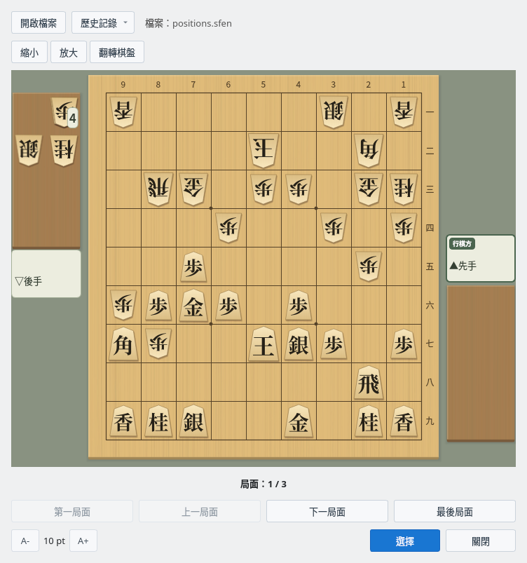
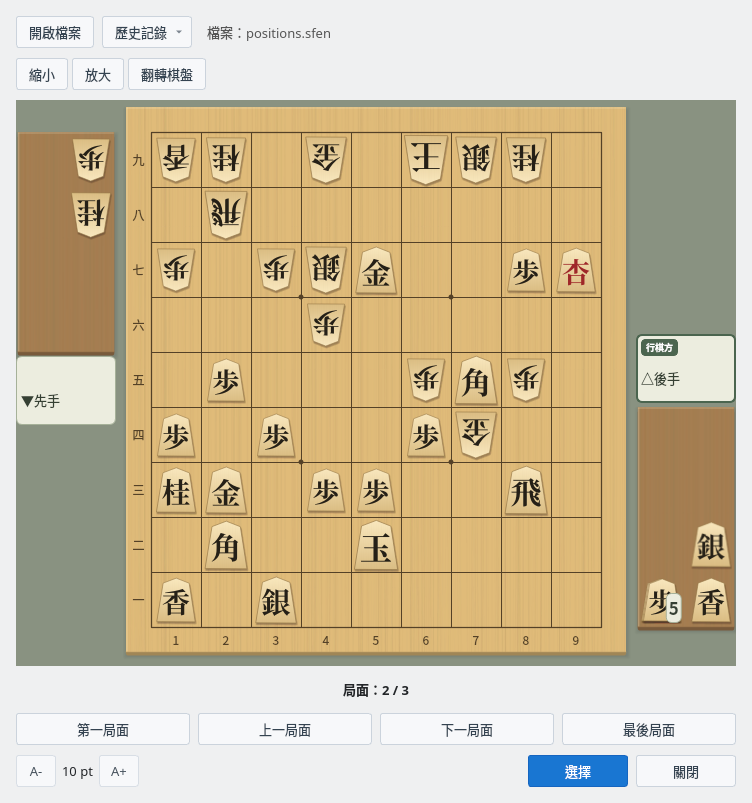
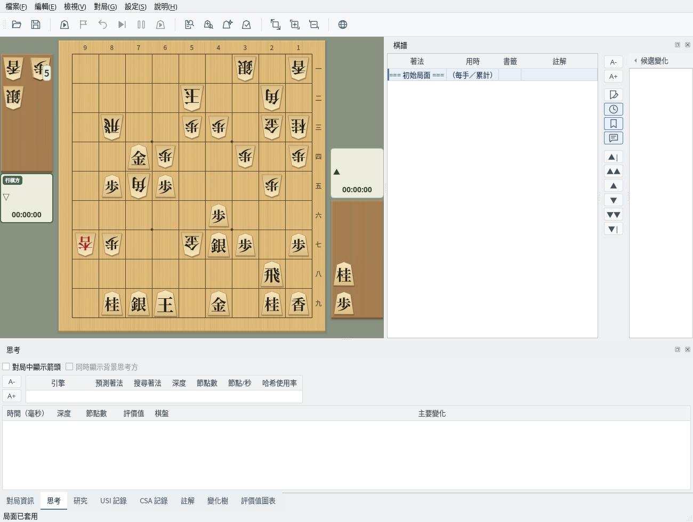

在棋盤上瀏覽 SFEN 格式的局面集，並匯入主視窗
截圖於 Linux 上以繁體中文介面擷取。
準備每行寫有一個 SFEN 局面的文字檔案
局面集檔案是每行寫一個局面的文字檔案（.sfen 或 .txt）。空行和以「#」開頭的行（註解）會被略過，因此「詰棋局面生成器」儲存的檔案也可以直接開啟。
無法讀取為局面的行（棋盤或持駒寫法有誤、包含無法走出的著法等）會被略過，並在檔名旁顯示略過的行數。如果所選檔案中一個局面也沒有，會顯示提示訊息，目前顯示的局面集保持不變。
# 鈴木 vs 山田（2026年10月5日）中的3個局面
l5s1l/4k2b1/1rg1pp1gn/3p2p1p/2P4p1/pPGP1P3/Bp2KSP1P/7R1/LNS2G1NL b sn4p 63
6s1l/4k2b1/1r2pp1gn/2Gp2p1p/1PbP3p1/5P3/+lp2gSP1P/7R1/1NSK1G1NL w NPsl5p 78
6s1l/4k4/4pp1gn/2pp2p1p/1BrP3p1/1sP2P3/K1+b1gSP1P/3+l3R1/5G1NL b GSLP2n5p 101在檢視器中逐一檢視局面
選擇「編輯」→「SFEN 局面集檢視器」開啟檢視器。檢視器是獨立於主視窗的視窗，開啟期間也可以操作主視窗。
按一下「開啟檔案」選擇局面集檔案後，棋盤上會顯示第1個局面。持駒顯示在駒台上，下一手的一方以對局者名稱上的「行棋方」標記表示，棋盤下方顯示「局面：1 / 3」等目前是第幾個局面。按一下「歷史記錄」可以開啟最近使用的檔案（最多5個）。

SFEN 局面集檢視器：開啟 positions.sfen，顯示第1個局面（先手行棋）
使用「第一局面」「上一局面」「下一局面」「最後局面」切換局面。按一下「翻轉棋盤」可從後手一方的視角檢視棋盤。
使用「放大」「縮小」（或在棋盤上按住 Ctrl 捲動滑鼠滾輪）調整棋盤大小時，視窗也會隨棋盤調整大小。棋盤大小在下次開啟時繼續使用。左下角的「A-」「A+」用於調整按鈕和文字的大小。

翻轉棋盤：從後手視角檢視第2個局面（後手行棋）
將選取的局面匯入主視窗
顯示要匯入的局面後按一下「選擇」，該局面會成為主視窗的初始局面，棋譜只保留初始局面。之後可以從該局面開始研究，也可以在對局設定的「初始局面」中選擇「目前局面」開始對局。
如果主視窗有尚未儲存的棋譜，會先詢問是否儲存。匯入的局面作為新的棋譜處理，按一下「儲存」時不會寫入之前開啟的棋譜檔案，而是開啟「另存為」。檢視器會保持開啟，可以接著匯入其他局面。

主視窗：將第2個局面作為初始局面匯入